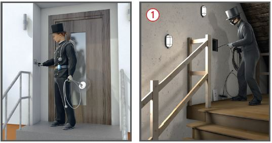
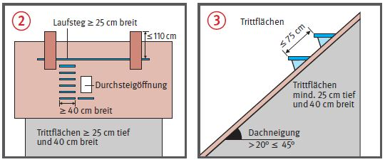
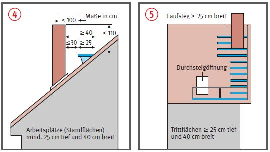

Schornsteinfegerarbeiten |

Verkehrswege
| Anforderungen an Durchsteigöffnungen in geneigten Dachflächen | ||
| minimale lichte Länge der Durchsteigöffnung | Anforderung an Fensterflügel | zulässig bei maximaler Dachneigung |
| geöffneter Fensterflügel muss flächig auf Dachfläche aufliegen | ||
| Anschlag oben mind. 120° Öffnungswinkel Anschlag seitlich mind. 90° Öffnungswinkel |
||
| Anschlag oben mind. 120° Öffnungswinkel Anschlag seitlich mind. 90° Öffnungswinkel |
||
Standflächen
Absturzsicherungen
Gefahrstoffe


07/2021